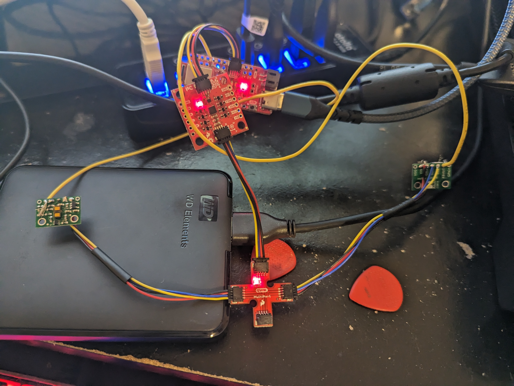

Lab 3
In Lab 3, the Time of Flight sensors were analyzed. The quality of their data and how they could be combined together with the artemis’s existing capabilites was analyzed.
Prelab
For the prelab, various things had to be planned out around the TOF sensors
The sensor address was originally 0x29(decimal 41) which was a problem since if both TOF sensors had the same address, then polling both sensors for data would create a response from both of the sensors thus not being able to discern which sensor sent the data
To use two TOF sensors, the “xshut” pin had be utilized on the TOF sensors. By turning this pin low using GPIO pins on the artemis, the sensor could be briefly turned off and be able to only address the other sensor. By turning off one sensor and using the sensor.begin() function on the other sensor with one i2c address and then switching the xshut pins and repeating the process with another address, both sensors could be set up with different i2c addresses. Using this modification, the procedure in the example code for the TOF sensors could simply be repeated but by using a different i2c address to address the sensors.
Since the robot has to detect distances from the side and the front, the sensors must be placed on the outside of the robot. Because of this, the two long QWIIC connectors were used for the TOF sensors in order to give them the maneuvaribility in placement on the robot. One possible placement of the sensors is one in the front of the robot and one on the right side of the robot. This could cause problems if obstacles come from the left or back of the robot, so only two directions can really be measured at a time.
Here is a sketch of the final wiring that needed to be done on the TOF sensors
Lab Tasks
Assembly
First, both of the TOF sensors were attached to the breakout board, though for now, only one sensor was used. The sensors both have their xshut pins soldered to the artemis’s gpio pins as explained in the prelab.

I2C
By running the wire_i2c example program, the artemis could scan the I2C addresses connected to it resulting in this output.

As can be seen, there are two I2C addresses present. This is because looking at the picture, the IMU is connected, so that address shows up as well, but the 0x29 address for the TOF sensor can be seen.
Distance Measurements
Since the robot is fast, the robot will need to be able to measure obstacles far away to appropriately plan for it. Therefore, the mode I chose was “long”. Therefore, I needed to measure the reliability of the sensor at short range as those are not the ranges the mode is optimized for I changed the mode using VL53L1X_SetDistanceMode(2) in the Vl53L1X_simpletest example code. With this mode, I collected various data points over distances by marking distances along a wall and moving the TOF sensor along it facing an object on the other end. I was therefore able to collect 100s of distance measurements from the TOF sensor using the bluetooth modifications I describe later and I was able to produce this graph.

As can be seen from the graph, The data is generally consistent and linear. The stdev bars that I created barely showed up until the longer distances were measured, so the TOF sensor reliable measures distances and stays fairly accurate until larger distances
By using the millis() function at the end of measuring and at the beginning of measuring after the sensor and found that the time between distance measurements was about 91ms.
2 TOF sensors
To make 2 TOF sensors work in parallel, I modified the artemis code according to the prelab, so this modification was done to set one of the TOF sensors to a new I2C address
digitalWrite(XSHUT_PIN_1, LOW);
Wire.begin();
if (!vl53_2.begin(0x20, &Wire))
{
Serial.print(F("Error on init of VL sensor_1: "));
Serial.println(vl53_2.vl_status);
while (1)
delay(10);
}
digitalWrite(XSHUT_PIN_1, HIGH);
digitalWrite(XSHUT_PIN_2, LOW);
if (!vl53_1.begin(0x29, &Wire))
{
Serial.print(F("Error on init of VL sensor_2: "));
Serial.println(vl53_1.vl_status);
while (1)
delay(10);
}
digitalWrite(XSHUT_PIN_2, HIGH);
With this modification to the example TOF code as able to duplicate the example code using the vl53_2 and vl53_1 objects instead of one vl53 object. With this, I was able to run the sensors in parallel creating this output.
With the alternating ID’s and different data between them, it can be seen the sensors are being polled in parallel.
Tof sensor speed
Since the speed of the sensors are a limiting factor. The sensors have to be read in an interrupt style fashion. To do this, I used the example code when testing the TOF sensors, but outside of the if statement, put a print of millis() resulting in data like this
the code that did this is
if (vl53_2.dataReady()) {
// new measurement for the taking!
distance = vl53_2.distance();
if (distance == -1) {
// something went wrong!
Serial.print(F("Couldn't get distance: "));
Serial.println(vl53_2.vl_status);
return;
}
//Serial.print(F("Distance: "));
Serial.print("sens_2 ");
Serial.print(distance);
Serial.println(" mm");
// data is read out, time for another reading!
vl53_2.clearInterrupt();
}
Serial.println(millis());
As can be seen by the output, when the sensors are not collecting data, the loop takes around 3ms, but if the sensors are collecting data, the loop takes around 12ms, a much longer time, so attaining the sensor data is the limiting factor and by reducing the amount of times the sensors are polled, a large number of calculations can be made.
Time v Distance
Finally, I had to modify the Lab 2 code to use this new distance data since distance data is very important for debugging the state of the TOF sensors. To do this, I first used the standard procedure of adding a bluetooth command. Then, I inserted the interrupt style distance measuring from the last section into the handle_command() function but instead of printing the distance, I stored them in variables distance_1 and distance_2. I then created a characteristic string like this
tx_estring_value.append("T:");
tx_estring_value.append((int)millis());
tx_estring_value.append("|");
tx_estring_value.append("D:");
tx_estring_value.append(distance_1);
tx_estring_value.append("|");
tx_estring_value.append("D:");
tx_estring_value.append(distance_2);
In the python code, I modified the notification handler to add this
if(arr == "dist_begin"):
temps = []
dist1 = []
dist2 = []
times = []
distState = 1
print("Started reading dist")
and
if('T' in arr and 'D' in arr):
times.append(int(arr.split('|')[0][2:]))
dist1.append(float(arr.split('|')[1][2:]))
dist2.append(float(arr.split('|')[2][2:]))
With these modifications, I could get both sensors’ data with one command like GET_TEMP_5s_RAPID but instead was GET_DIST_5s_RAPID this allowed me to grab and display the data you see in the rest of the graphs of the report.
Displaying the data fully gives graphs like this.